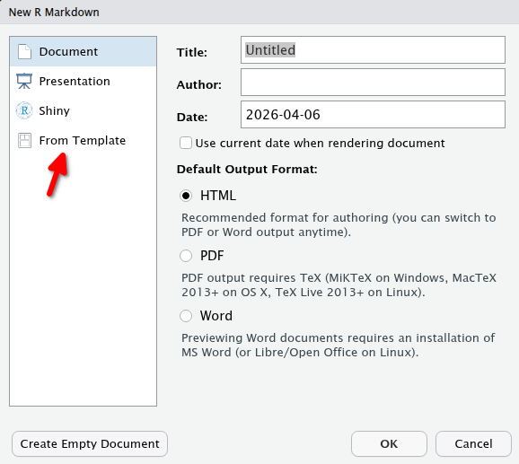
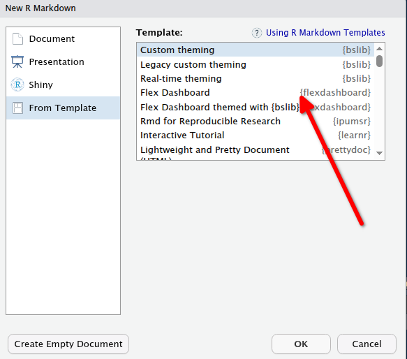

4 Dashboards
4.1 Conceitos básicos: flexdashboard vs Shiny
Tanto o Flexdashboard quanto o shiny são pacotes do R para criar aplicações web interativas, mas eles servem a propósitos distintos e têm abordagens diferentes.
No Flexdashboard o propósito é a Criação de painéis interativos e relatórios web de forma rápida e fácil. É ideal para apresentar resultados de análises, dashboards e relatórios com visualizações interativas.
ele é totalmente Baseado em Markdown. Combina texto formatado em Markdown com trechos de código R, tornando a criação de painéis muito mais intuitiva e rápida.
o Shiny permite a criação de aplicações web interativas mais complexas e personalizadas. Ele é ideal para construir aplicativos que exigem uma lógica e reações mais elaboradas, interações dinâmicas e controle total sobre a interface do usuário.
Tabela Comparativa Resumida:
| Característica | Shiny | Flexdashboard |
|---|---|---|
| Propósito | Aplicações Web Complexas | Painéis Interativos e Relatórios |
| Abordagem | Reativa | Markdown |
| Complexidade | Alta | Baixa |
| Flexibilidade | Alta | Limitada |
| Escopo | Aplicações Web Completas | Relatórios, Dashboards, Apresentações |
| Curva de Aprendizagem | Íngreme | Suave |
| Personalização | Total | Limitada |
| Interatividade | Altamente Personalizável | Baseada em Widgets |
| Nessesidade de Servidor | Sim | Não |
4.2 Flexdashboard
O flexdashboard é um um pacote do R que permite criar painéis interativos e responsivos de forma fácil e rápida. Ele combina a simplicidade do Markdown com o poder do R para gerar relatórios web dinâmicos, apresentações, tabelas e gráficos
Em essência, um flexdashboard é um documento Markdown especial que contém trechos de código R intercalados com texto formatado. Quando renderizado, esses trechos de código são executados e seus resultados (gráficos, tabelas, texto, etc.) são incorporados ao documento HTML, gerando uma página web interativa.
Como no Rmardown e no Quarto tambem temos um cabeçalho YAML onde podemos definir o título do dashboard, o layout, o tema e outras opções de configuração. O layout pode ser organizado em colunas, linhas ou abas, permitindo uma estrutura flexível para apresentar os dados e visualizações.
install.packages("flexdashboard")para começar um Rmd preprado para o flexdashbord basta usar o template do Rstudio para isso vá em File > New File > R Markdown > From Template > Flexdashboard. Isso vai criar um arquivo com a estrutura básica de um flexdashboard, incluindo o cabeçalho YAML e alguns exemplos de código.


---
title: "Meu Primeiro Flexdashboard"
output:
html_document:
theme: "united"
---A seguir, podemos adicionar trechos de código R para criar gráficos, tabelas e outros elementos interativos.
{r setup, include=FALSE}
knitr::opts_chunk$set(echo = TRUE)
library(tidyverse)
`
Introdução
Este é um flexdashboard simples para demonstrar como criar painéis interativos com R.
`{r plot_example}
Cria um gráfico de dispersão
ggplot(mtcars, aes(x = mpg, y = hp)) +
geom_point() +
labs(title = "Relação entre MPG e HP")
`
Tabela de Dados
`{r table_example}
Exibe as primeiras linhas do dataset mtcars
head(mtcars)
`
Ao renderizar este documento, ele se transformará em um painel interativo onde o gráfico de dispersão e a tabela de dados serão exibidos. O flexdashboard é uma ótima ferramenta para criar relatórios e dashboards de forma rápida, especialmente quando você deseja compartilhar insights de dados de maneira visual e interativa.
O flexdashboard oferece diferentes layouts para organizar o conteúdo do painel. Use a sintaxe {.tabset} para criar abas e {.row-fluid} para organizar elementos em linhas.
Veja os possíveis layouts
Veja algusn exemplos:
4.3 Shiny
Shiny* é um pacote do R que permite a construção de aplicações web para analise de dados usando comandos em R sem precisar de conhecimentos de HTML, CSS e nem JavaScript.
dentre suas principais vantagens destacamos:
- as aplicações desenvolvidas em Shiny pode ser executadas localmente usando o Rstudio ou hospedadas em um site para serem acessadas via web.
- o Shiny pode ser iniciado em qualquer plataforma e não é necessário o uso do Rstudio , apesar deste facilitar o desenvolvimento
- tudo pode ser programado diretamente em R incluindo uma simples interface gráfica com o usuário (UI) que pode ser programada em poucas linhas até UIs mais complexas.
- varias recursos gráficos podem ser empregados para exibir imagens, tabelas e listagens de objetos R
- o servidor responde rapidamente aos comandos via browser
como foi dito no item 5 uma parte do código é executada no servidor e outra no seu browser (Chrome, firefox, etc…) assim quando modificamos um parâmetro na UI de nosso cliente (browser) esbida. sa informação e enviada ao server que a processa e envia novamente os resultados ao nosso cliente para ser exibida.

Para instalar o Shiny no seu computador
install.packages("shiny")Vamos agora demonstrar rodando um dos exemplos que acompanha o pacote
library(shiny)
runExample("01_hello")Após rodarmos o exemplo teremos uma tela com 3 áreas distintas mas antes de falarmos nelas repare que você esta em uma pagina web (elipse no alto a esquerda) que esta pagina está sendo exibida pelo Rstudio no endereço http://127.0.0.1:3842 ou seja, na sua maquina local na porta 3842. o Shiny iniciou um server na sua maquina

- Painel de entrada de parâmetros , chamada de sidebarPanel
- Painel principal chamado de mainPanel onde são exibidos os resultados das funções
- Painel do exemplo onde são exibidas informações do exemplo e o código fonte do aplicativo (só vai aparecer nos exemplos)
Em uma aplicação típica o item 1 e o 2 são definidos na UI (user interface) , e o resultado exibido no item 2 é o que retornam de fa função Server
Para se criar um App é necessário definir no mínimo duas funções ui e server vamos dar uma olhada no código fonte como comentários extras para explicar melhor como um App funciona.
# o App inicia chamando a biblioteca shiny
library(shiny)
# o trecho a seguir define a UI, interface com o usuario
# que neste exemplo e um controle deslizante que permite
# o parametro bin seja modificado!
# função fluidPage define varios componetes da UI
# Define UI for app that draws a histogram ----
ui <- fluidPage(
# App title ----
titlePanel("Hello Shiny!"),
# Sidebar layout with input and output definitions ----
sidebarLayout(
# Sidebar panel for inputs ----
sidebarPanel(
# Input: Slider for the number of bins ----
sliderInput(inputId = "bins",
label = "Number of bins:",
min = 1,
max = 50,
value = 30)
),
## Nesta parte da UI é definida a tela de "Resultados"
## Neste exemplo um histograma
# Main panel for displaying outputs ----
mainPanel(
# Output: Histogram ----
plotOutput(outputId = "distPlot")
)
)
)
# A seguir temos a segunda parte do codigo que é a definição da função
# Server que vai execurar o codigo R usando os parametros definidos na funcão UI
# neste caso o histograma
# Define server logic required to draw a histogram ----
server <- function(input, output) {
# Histogram of the Old Faithful Geyser Data ----
# with requested number of bins
# This expression that generates a histogram is wrapped in a call
# to renderPlot to indicate that:
#
# 1. It is "reactive" and therefore should be automatically
# re-executed when inputs (input$bins) change
# 2. Its output type is a plot
output$distPlot <- renderPlot({
x <- faithful$waiting
bins <- seq(min(x), max(x), length.out = input$bins + 1)
hist(x, breaks = bins, col = "#75AADB", border = "white",
xlab = "Waiting time to next eruption (in mins)",
main = "Histogram of waiting times")
})
}
# por fim uma parametro que faz a execução do aplicativo
# essa função rececbe o nome das funçoes UI e Server
# Create Shiny app ----
shinyApp(ui = ui, server = server)Teste algum dos exemplos disponíveis com o pacote Shiny .os exemplos são :
use a função runExample() para executar um deles.
runExample("01_hello") # um histograma
runExample("02_text") # tabelas e data frames
runExample("03_reactivity") # mudando o DF utilizado
runExample("04_mpg") # boxplots de diferentes variaveis
runExample("05_sliders") # diversos slider bars
runExample("06_tabsets") # multiplas abas
runExample("07_widgets") # texto e botão de update
runExample("08_html") # UI em formato HTML
runExample("09_upload") # upload de arquivo csv
runExample("10_download") # download de um DF para arquivo
runExample("11_timer") # exibe um timer Veja o potencial das aplicações na Galeria Shiny, mas saiba que construir uma aplicação mais complexa e trabalhoso e exige conhecimentos de programação que vão alem do R básico.
Repare que aqui você vai estar usando servidores remotos para executar as aplicações. O Shiny disponibiliza um serviço http://www.shinyapps.io/ que permite que você hospede gratuitamente até 5 aplicações, lembrando que neste modo todos seus códigos e dados estão visíveis a todas as pessoas.
4.3.1 1.2 Criando um App
Para criar um é necessário ter uma boa ideia do que se deseja atingir com ele, bem como pensar bem como se dará a interação como o usuários e quais as respostas esperadas. e estar preparado para testar inúmeras vezes.
4.3.2 1.3 UI e Widgets
Como podemos ver no exemplo 07_widgets nossa interação com a UI se da através de botões, opções de checkbox, datas, etc… que chamamos de widgets. Eles são definidos através de funções especificas para cada tipo com seus parâmetros, opções diferentes. Abaixo podemos ver os principais deles.

Alem dos widgets é necessário, na parte final do UI especificar o tipo de saída (output) onde o resultado é comunicado ao usuário através de tabelas, gráficos, imagens , textos. Os textos podem ter resultados de funções ou ate mesmo códigos HTML embutidos
4.3.3 1.4 Server
A principal função executada pelo server e reagir as especificações e modificações nos parâmetros de entrada, que são acessados através dos widgets. Em resumo a função server vai rodar seu código usando como input os parâmetros dos widgets. Essa característica é que vai tornar o App verdadeiramente interativo, reagindo a cada mudança .
A preocupação e que nessa sessão os tipo de entrada correspondam as que foram especificas na UI bem como o tipo de output que foi declarado. Assim, se declaramos na UI que o output seria um tipo de plot o resultado não pode ser uma tabela.
4.3.4 1.5 Um exemplo de App bem simples
Como dissemos anteriormente a primeira coisa a fazer é planejar bem o que deseja. Vamos imaginar um App que permita escolher uma das variáveis de um dos exemplos do R, digamos, o iris e fazer uma estatística sumaria da variável selecionada.
Primeiramente vamos então pensar na interface
- definimos um titulo
- um painel lateral com um widget de seleção do nome da variável
- um painel principal com o texto do tipo verbatimText e como o nome sumario
# Define o UI
ui <- fluidPage(
# titulo do painel lateral
titlePanel("Sumario"),
# barra lateral com lista de input
sidebarLayout(
sidebarPanel(
selectInput("VAR",
"Seleção da Variavel",
choices = names(iris), selected = 1)
),
# Define o painel principal como sendo texto (verbatin)
mainPanel(
verbatimTextOutput("sumario")
)
)
)Em seguida definimos a função server
observe que fazemos apenas um cat() com o texto e o resultado da função summary() , a seleção da variável e feita a partir do resultado de SelectInput() no UI, que define o nome da variável como VAR ,e vamos usar seu nome dentro da função server como input\(VAR* . Por fim observe que o nome do objeto retornado pela função **renderPrint()** é *output\)sumario
# Define server e a funçao de output do tipo Print
# resultado de um summary
server <- function(input, output) {
output$sumario <- renderPrint({
cat("Resultado da variável = ",input$VAR,"\n\n")
summary(iris[,input$VAR])
})
}colocando tudo junto em um único arquivo de nome App.R
# Chama o shiny
library(shiny)
# Define o UI
ui <- fluidPage(# titulo do painel lateral
titlePanel("Sumario"),
# barra lateral com lista de input
sidebarLayout(sidebarPanel(
selectInput(
"VAR",
"Seleção da Variavel",
choices = names(iris),
selected = 1
)
),
# Define o painel principal como sendo texto (verbatin)
mainPanel(verbatimTextOutput("sumario"))))
# Define server e a funçao de output do tipo Print
# resultado de um summary
server <- function(input, output) {
output$sumario <- renderPrint({
cat("Resultado Var = ", input$VAR, "\n\n")
summary(iris[, input$VAR])
})
}
# Inicia o app usando as funçoes ui e server
shinyApp(ui = ui, server = server)Execute o App e verifique se tudo está funcionando.
Pense em implementar um que alem da estatística sumaria também fizesse um boxplot das variáveis! O que você deveria adicionar ao código? Bastaria fazer uma chamada a função boxplot em server ? Ou seria necessários outros passos adicionais? Que erros potenciais você enxergaria com essa aplicação ?
Essa foi uma brevíssima introdução ao potencial do Shiny aprenda mais em
- https://shiny.rstudio.com/tutorial/ (assista as lições em Vídeo )
- https://shiny.rstudio.com/tutorial/written-tutorial/lesson1/ (lições em HTML)